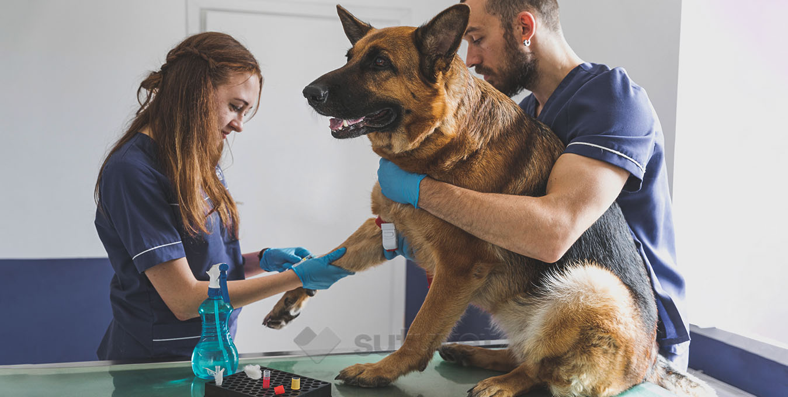
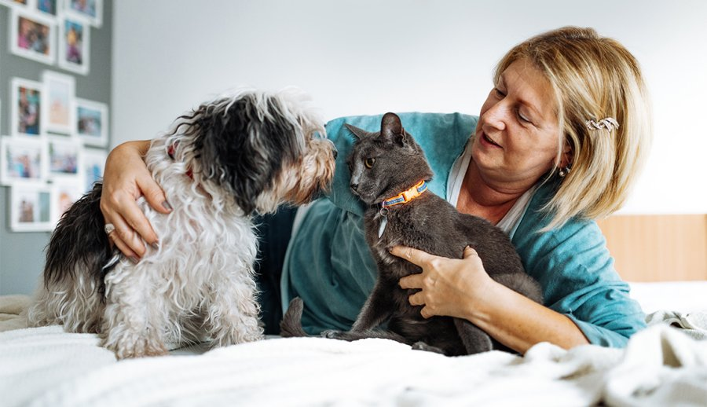
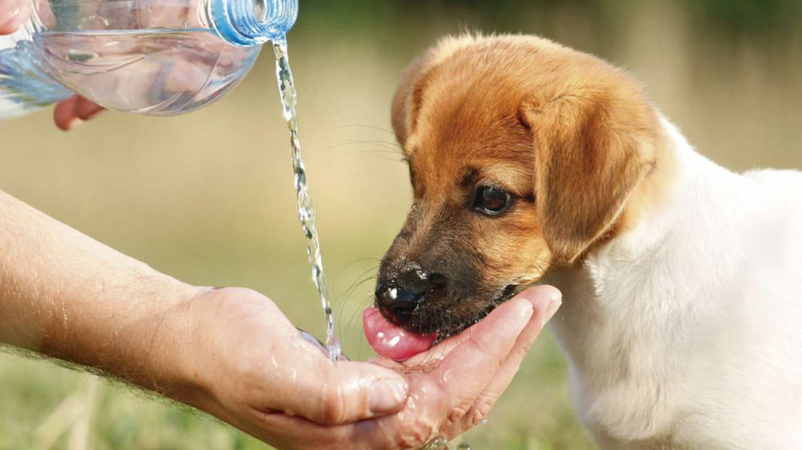
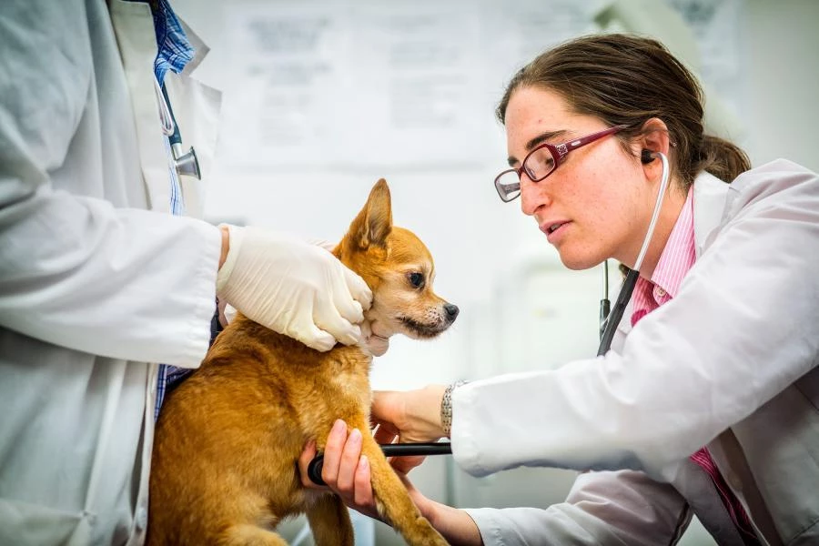
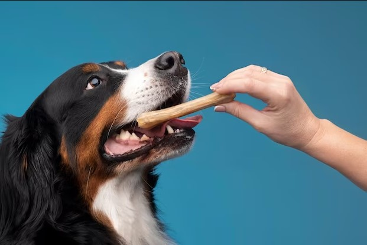
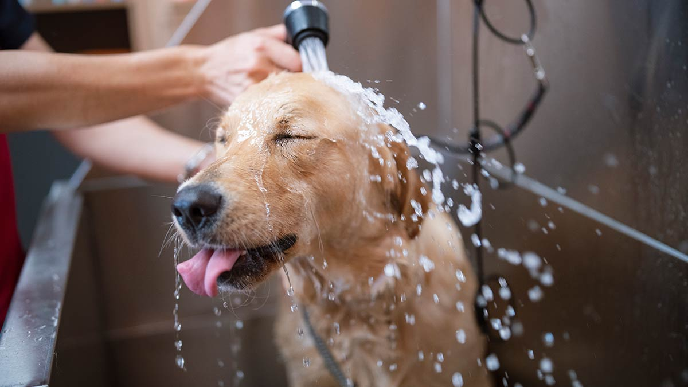
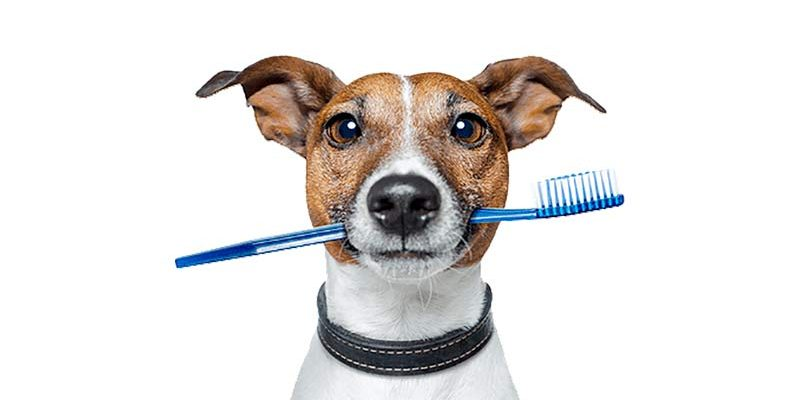
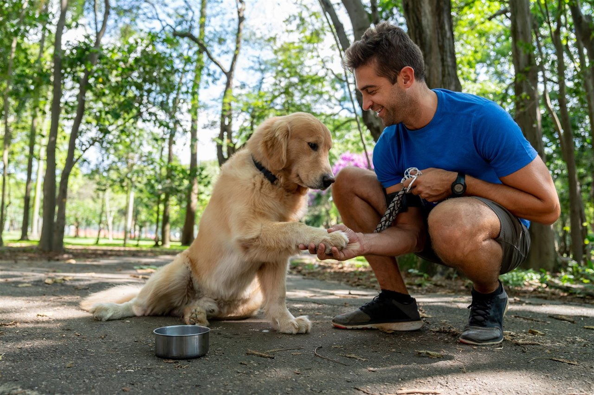

1) Visitas al veterinario

Tener una mascota de manera responsable comienza con visitas regulares al veterinario. Dada su esperanza de
vida, tu perrito o mínimo deberían hacerse un chequeo una o dos veces al año. Pero el establecer y mantener la
buena salud de tu mascota significa mantenerse al día con las visitas al veterinario a medida que envejecen.
Consejo clave: antes de salir camino hacia el veterinario, sácalos de paseo. Esto se hace para que no
asocien entrar al carro con ir al veterinario.
2) Entorno saludable y agradable

Así como los seres humanos necesitamos un hogar en el que podamos sentirnos cómodos y seguros, también lo
necesitan nuestras mascotas.
Consejo clave: las mascotas que son demasiado jóvenes o ya tienen varios años encima pierden su capacidad
para regular la temperatura corporal eficientemente. Es importante ofrecerles una manta y una cama que les proporcione
confort y calor. Sobre todo en las horas de la noche.
3) Su nutrición

Todos los organismos vivos necesitan alimento para sobrevivir. Lamentablemente, muchas mascotas sufren de
obesidad y otros problemas metabólicos por mala alimentación. Lo que más adelante se puede derivar en otros
problemas de salud.
Si bien existe un debate sobre qué comida canina es más apropiada, hay un consenso al respecto. Todos necesitan
un buen equilibrio de proteínas, grasas saludables, carbohidratos y mucha agua (Pets, 2021). Estos deben
administrarse en las cantidades adecuadas y también en sus proporciones correctas.
Consejo clave: selecciona una fórmula de alimento para mascotas que sea apropiada para su edad, sus
condiciones de salud y el nivel de actividad de tu mascota.
4) Esterilizar

Esterilizar a tu mascota evita una serie de problemas de salud (ASPCA, s.f.), incluídos embarazos complicados
y ayuda a la reducción de animales sin hogar. Debido a que la esterilización o castración es una cirugía que
requiere anestesia general, es probable que tu mascota pase la noche en el consultorio del veterinario. Esto, durante
al menos una noche para observación y recuperación.
Consejo clave: trata de practicar este procedimiento en una edad temprana para tu peludito. De esta manera
su recuperación y su proceso de cicatrización será rápida.
5) Vacunar
Poco después de llegar a tu hogar, la primera salida debe ser al veterinario. Acto seguido se establecerá un
calendario de vacunación para tu pequeño cachorro o gatito. Esto, con el objetivo de protegerlos de enfermedades
como la rabia o el moquillo en el caso de los perros. Los gatos también se benefician de las vacunas que previenen
el virus del herpes felino, la leucemia felina y la rabia.
Consejo clave: si adoptaste una mascota en edad avanzada, asegúrate de que también esté protegido. Las
vacunas necesitan renovación y no son solo para mascotas jóvenes.
6) Entrenar
Uno de los aspectos más importantes del cuidado responsable de las mascotas es asegurarse de que tu perro o gato
tenga un entrenamiento adecuado. Enseñarles a ir al baño es la prioridad número uno. Al igual que trabajar en el
entrenamiento de órdenes mínimas de obediencia. Una mascota bien entrenada es una mascota feliz, y eso se traduce
en un padre feliz.
Consejo clave: el entrenamiento basado en recompensas arroja excelentes resultados. Puedes incluir algunos
snacks que ayuden a reforzar su comportamiento positivo.
7) Juguetes

Desecha y reemplaza los juguetes que estén gastados. Los juguetes chillones pueden proporcionar mucho
entretenimiento para tu perro. Es importante que el dispositivo que proporciona el sonido no se pueda arrancar del
juguete. Este objeto puede ser ingerido fácilmente, causando que termines por visitar el veterinario. Asimismo, no
olvides eliminar los juguetes con partes sueltas que puedan presentar peligro de asfixia y bordes duros o afilados
que podrían causar lesiones.
Consejo clave: Evita los juguetes demasiado pequeños, estos pueden tragarse fácilmente o alojarse en la
garganta. Los juguetes de peluche son buenos para varios propósitos. En ocasiones suelen ser de gran utilidad para
incluirlos como recompensa en un esquema de entrenamiento; sin embargo, estos deben utilizarse con precaución.
8) Higienizar

Las patas de tu mascota son una de las partes más vulnerables de su cuerpo. Si no se cuidan adecuadamente, pueden
agrietarse, lesionarse o sangrar fácilmente. Lo que provoca una gran incomodidad y dificultad para caminar.
Igualmente, se encuentran expuestos a bacterias presentes en los desechos de otras mascotas que no son vacunadas o
purgadas regularmente.
Consejo clave: puedes utilizar para esta tarea pañitos húmedos especiales para mascotas sin alcohol. De
igual manera te recomendamos usar agua y un champú especial para su piel y pelaje.
9) Lavado bucal

Al igual que las personas, tus mascotas pueden sufrir al no tener una limpieza dental regular. Para esta tarea
puedes usar cepillos de dientes y crema dental especiales para mascotas. Cepillar sus dientes con regularidad es la
forma principal de eliminar la placa suave, antes de que se convierta en cálculo mineralizado. El hábito de limpiar
los dientes evita cosas tales como el mal aliento, al tiempo que ayuda a prevenir otras enfermedades (Pets, 2021).
Consejo clave: a falta de una cita de profilaxis regular, puedes proporcionarles golosinas y juguetes
dentales que ayudarán de manera preventiva y de mantenimiento con esta tarea.
10) Cariño

Sabemos que está de más decirlo. Sin embargo, no sobra para nada recordarte cómo todas las mascotas realmente
quieren que las acaricien sin tregua. Les encanta el cariño, la calidez y las sonrisas. Dale especial atención a tu
mascota y ellos le brindarán en retorno a tu familia un amor incondicional que solo una mascota puede entregar.
Consejo clave: prestarles atención y jugar con ellos cada vez que puedas, suma puntos extra en su corazón.